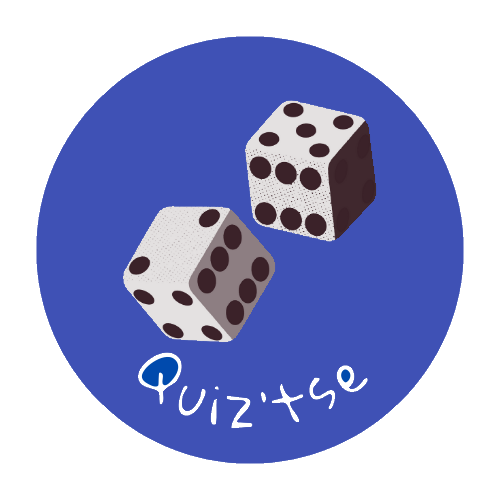

<mat-sidenav-container class="sidenav-container">

  <mat-sidenav #drawer class="sidenav" fixedInViewport
      [attr.role]="(isHandset$ | async) ? 'dialog' : 'navigation'"
      [mode]="(isHandset$ | async) ? 'over' : 'side'"
      [opened]="(isHandset$ | async) === false">
    <a routerLink="/home"></a>
    <hr>
    <mat-nav-list>
      <a mat-list-item routerLink="/home"><mat-icon fontIcon="quiz" class="menu-icon"></mat-icon>Jouer</a>
      <a mat-list-item routerLink="/quiz/create" [disabled]="!isLogged">
        <mat-icon fontIcon="library_add" class="menu-icon"></mat-icon>Créer un quiz
        <mat-icon class="menu-icon" *ngIf="!isLogged">lock</mat-icon>
      </a>
      <a mat-list-item routerLink="/profile" [disabled]="!isLogged">
        <mat-icon fontIcon="account_box" class="menu-icon"></mat-icon>Profil
        <mat-icon class="menu-icon" *ngIf="!isLogged">lock</mat-icon>
      </a>
      <a mat-list-item routerLink="/dashboard"><mat-icon fontIcon="space_dashboard" class="menu-icon"></mat-icon>Dashboard</a>
    </mat-nav-list>
    <hr *ngIf="isLogged">
    <mat-nav-list>
      <a mat-list-item *ngIf="isLogged" (click)="disconnect()"><mat-icon fontIcon="logout" class="menu-icon"></mat-icon>Déconnexion</a>
    </mat-nav-list>
  </mat-sidenav>

  <mat-sidenav-content>
    <mat-toolbar color="primary">
      <button
        type="button"
        aria-label="Toggle sidenav"
        mat-icon-button
        (click)="drawer.toggle()">
        <mat-icon aria-label="Side nav toggle icon">menu</mat-icon>
      </button>
      <div class="spacer"></div>
      <a routerLink="/login" *ngIf="!isLogged">
        <mat-icon fontIcon="login" class="icon"></mat-icon>
      </a>
      <span *ngIf="isLogged">{{username}}</span>
    </mat-toolbar>

    <!-- Différentes pages avec le routing -->
    <router-outlet></router-outlet>
  </mat-sidenav-content>
</mat-sidenav-container>
